Префектура Ямагата · Яманобэ, Ямагата, Ёнэдзава · ремёсла
Ремёсла Ямагаты: шерстяные ковры ручной работы и коробки из павловнии
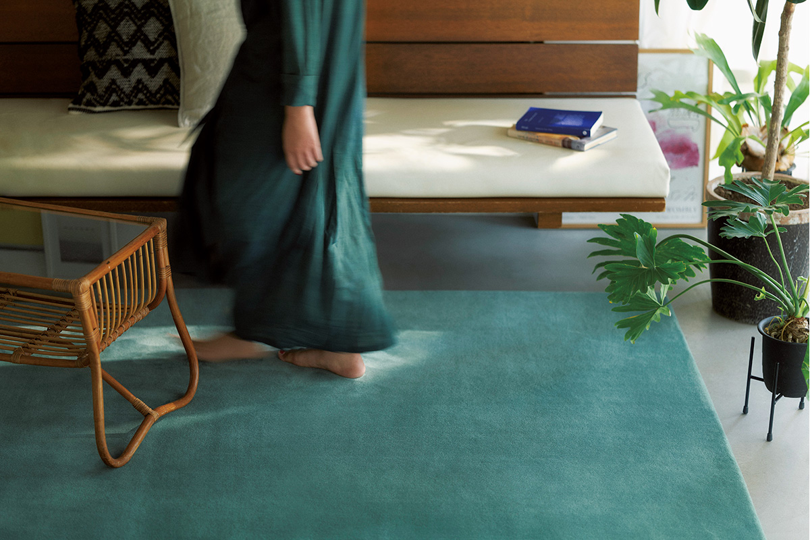
Щедрая природа Ямагаты веками давала мастерам материал, например павловнию для коробок. В трёх мастерских префектуры старое ремесло сумели приспособить к сегодняшнему дому.
Ремесло
Старые умения для нового дома
В префектуре Ямагата на севере Японии каждое время года выглядит по-своему, и здесь до сих пор живы многие традиционные ремёсла. У каждого из них своё сырьё, которое дали местный климат и земля. Мастера, о которых пойдёт речь, не просто хранят приёмы предков: они придумывают вещи, которые нужны в квартире XXI века.
Первая остановка в городке Яманобэ, к западу от города Ямагата: здесь ткут ковры Yamagata Dantsu. Вторая в самом городе Ямагата, где с 1930 года делают коробки из павловнии. Третья в Ёнэдзаве на юге префектуры: у этого города больше 400 лет ткацкой истории, и одна семейная мастерская превратила плотные ковры ручного ткачества в коврики для стульев и табуретов. Все эти вещи делают вручную, по одной.
Ковры
Yamagata Dantsu: двенадцать цветов из древней поэзии
Yamagata Dantsu это собственная марка коврового производства «Ориентал карпет». В 2020 году вместе с архитектурным бюро Torafu Architects здесь сделали новую коллекцию однотонных ковров MANYO. Идею подсказал «Манъёсю», древнейшая японская антология стихов, собранная в VIII веке: из неё выбрали двенадцать стихотворений и двенадцать традиционных цветов, которые в них упоминаются.
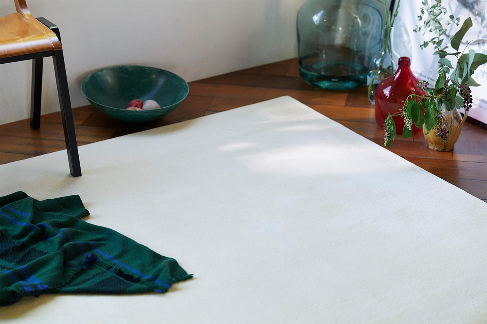
Путь ковра MANYO от шерсти до готового изделия состоит из шести этапов. Шерсть привозят в основном из Новой Зеландии и Великобритании и смешивают в пропорциях, которые подбирают под каждое изделие: важны жёсткость, упругость и мягкость волокна. Затем пряжу обрабатывают по собственной технологии мерсеризации: долго держат в красильной ванне, много раз промывают горячей водой и сушат. В красильне цвет для MANYO подбирают пробными окрасками и тестами на выцветание и только потом красят обработанную пряжу.
Ткут ковёр способом ручного прошива: мастер вбивает нити в основу специальным инструментом, похожим на пистолет. Силу удара и равновесие нужно всё время держать одинаковыми, и качество здесь целиком зависит от опыта. Потом поверхность выравнивают машиной, похожей на газонокосилку, проходят по ковру снова и снова и доводят машинкой для стрижки и ручными ножницами. Последний этап тоже ручной: мастер на глаз проверяет ковёр, мягко подрезает кромку и убирает каждую выбившуюся ворсинку.
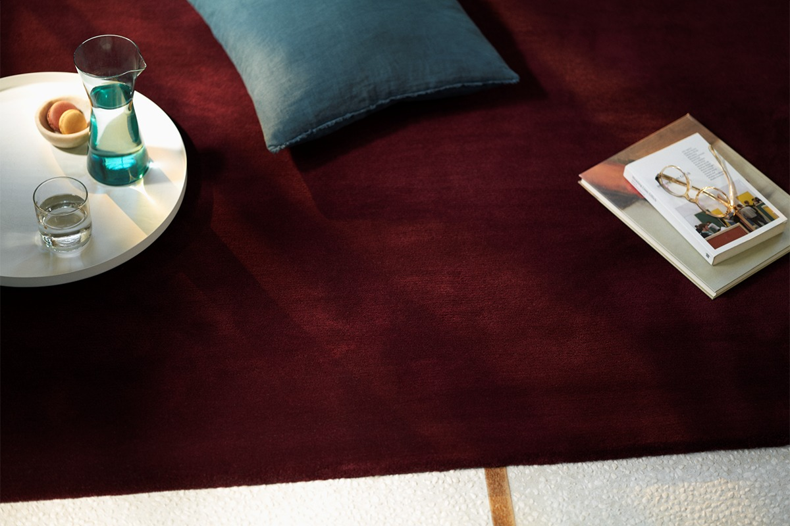
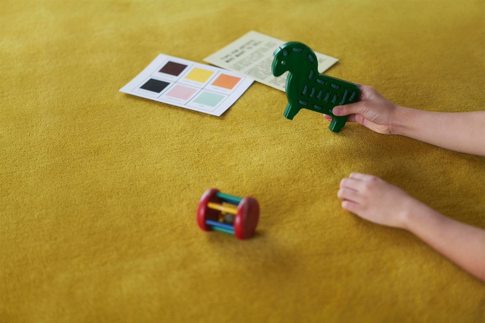
Мерсеризация превращает хлопковую нить в нить с блеском, как у шёлка. В «Ориентал карпет» придумали, как обрабатывать так шерстяные ковры, ещё в 1950 году. У таких ковров появляется шелковистый блеск и приглушённый, словно чуть потускневший оттенок, а на ощупь они мягкие. Их высоко оценили прежде всего архитекторы, и ковры марки лежат во многих известных зданиях.
Со временем шерсть и красители стали поставлять иначе, и обработка готовых ковров начала дорожать. Тогда в компании стали искать способ обрабатывать не ковёр, а пряжу. С 2015 года над этим работали вместе с Промышленно-техническим центром префектуры Ямагата, и через пять лет коллекция MANYO стала первой, где новый способ применили на деле. Ковёр выглядит так, будто ему уже много лет.
В коллекции двенадцать цветов: MASHIRO, FUJI, MOMICHI, SHIROKANE, AJISAI, YAMAAI, HANEZU, AKANE, KURI, KAKITSUBATA, MURASAKI и YORU. В 2020 году ковёр 1400 на 2000 мм стоил 297 220 иен, 2000 на 2000 мм 424 600 иен, 2500 на 2000 мм 530 750 иен; можно заказать и свой размер.
Мастерская и шоурум марки находятся в Яманобэ. По данным официального сайта на 2026 год, мастерскую показывают гостям по четвергам, пятницам и каждую вторую субботу, только по предварительной записи.
Yamagata Dantsu («Ориентал карпет»)
- Адрес
- префектура Ямагата, уезд Хигаси-Мураяма, Яманобэ, Яманобэ, 21
- Телефон
- +81 23-664-5811
Павловния
«Ёсида»: коробки, которые держат аромат
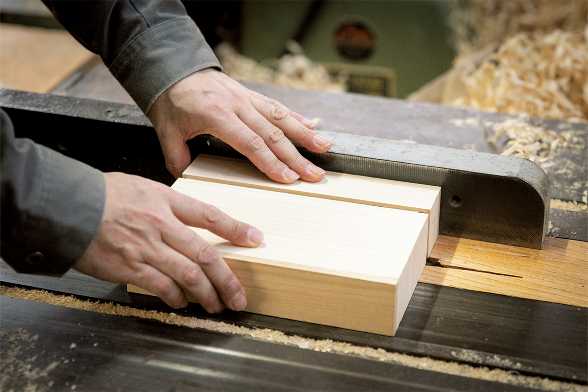
Павловния издавна была одним из знаменитых продуктов Ямагаты. Её древесина хорошо держит влажность и защищает содержимое от насекомых и плесени, и мастерская «Ёсида» с 1930 года делает из неё коробки на заказ. Основал её столяр-заготовщик. Сначала здесь делали ящички для лекарств, которые развозили по домам, а одними из первых придумали подарочные коробки для черешни. Каждый раз мастерская отвечала на то, что нужно людям.
Для коробок выбирают павловнию с прямыми и ровными волокнами. Всё подгоняют вручную, с точностью до долей миллиметра: крышка садится так плотно, что коробку с содержимым можно поднять за крышку, и она не упадёт. Поверхность у готовой коробки гладкая, с лёгким блеском.
Глава мастерской в третьем поколении придумывает вещи, которых от коробок из павловнии не ждёшь: футляр для книг, где хранят книгу как личное сокровище, подставку-динамик для смартфона, которая звучит благодаря дереву, контейнеры для кофейных зёрен и чайного листа. Всё это рассчитано на целую жизнь.
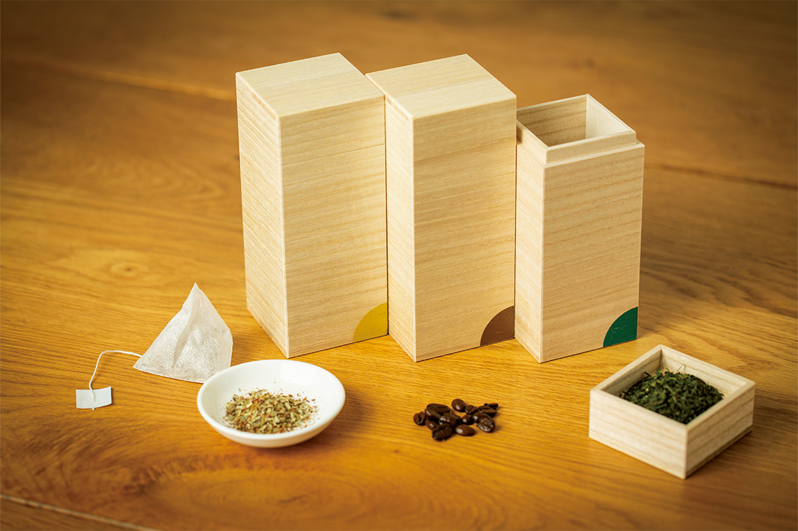
Набор для чая и кофе появился в совместном проекте города Ямагата: его придумала студентка отделения промышленного дизайна Тохокуского университета искусства и дизайна. Размер каждой коробки 64 на 64 на 156 мм.
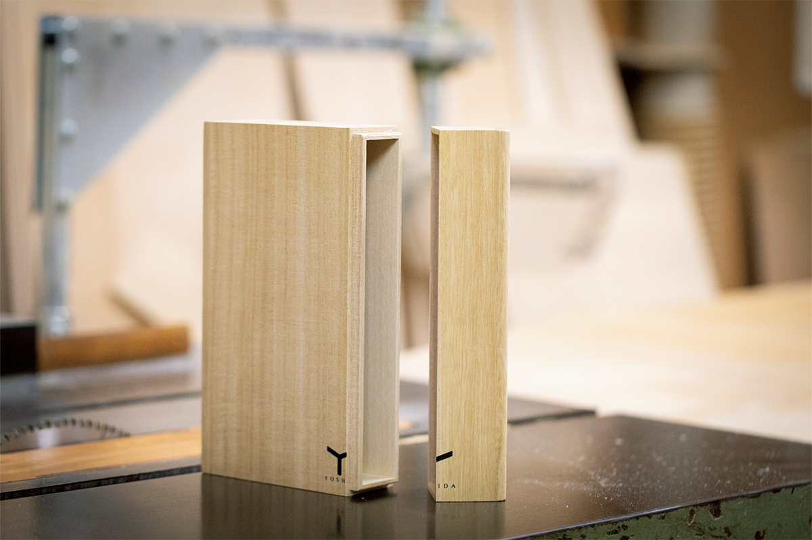
Название футляра отсылает к Сёсоину, древней императорской сокровищнице в Наре.
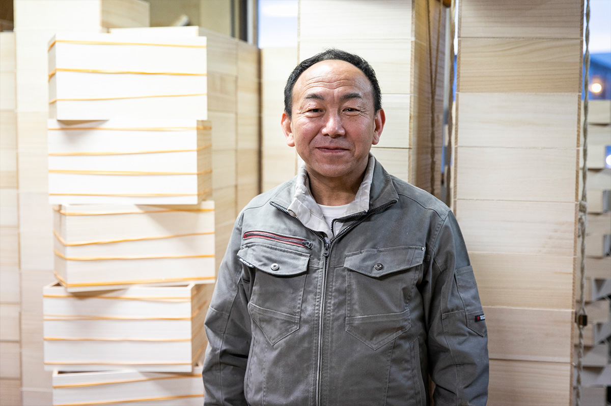
«Коробка из павловнии лёгкая, хорошо держит влажность и мягко защищает от ударов, поэтому в ней лучше всего хранить то, что дорого. И с годами она красиво меняется»
глава мастерской «Ёсида»
«Ёсида»
- Адрес
- префектура Ямагата, Ямагата, Ицукамати, 6-9
- Телефон
- +81 23-645-3025
- Часы работы
- 9:00–19:00
- Выходные
- воскресенье, праздники
- Цены / Вход
- посещение мастерской и покупка только по предварительной записи
Ковры
Yonezawa Dantsu Takizawa Kobo: коврик, на котором сидишь красиво
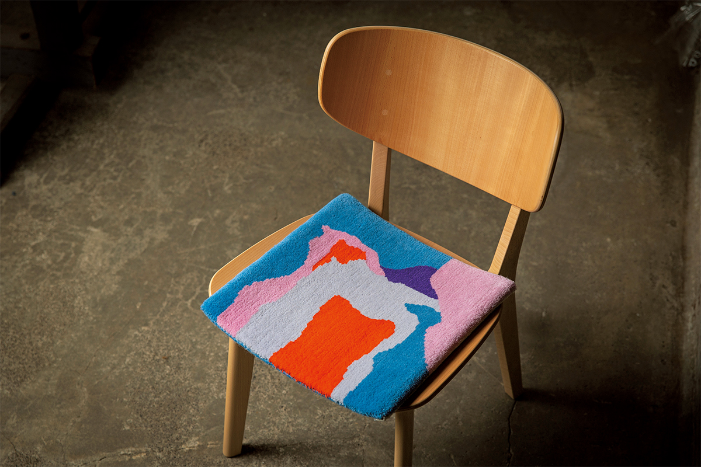
Данцу, плотные ковры ручного ткачества, ведут свою историю с Ближнего Востока примерно три тысячи лет назад. Мастерская Такидзавы в Ёнэдзаве начала ткать их в 1966 году. Её основатель изобрёл и запатентовал «станок Такидзавы», и прочные ковры с него в своё время лежали в резиденции премьер-министра и в театре «Ниссэй» в токийском квартале Хибия.
Сын основателя получил патент на улучшенную версию станка. Основной доход мастерской даёт уход за дорогими коврами, а с 2017 года она обновила марку и стала делать коврики для стульев. Из шерстяных и хлопковых нитей основы и утка вместе с перевивочной нитью ткут плотное полотно, и всё, от рисунка до отделки, делают вручную. Сидеть на таком коврике удивительно удобно, и человек на стуле даже выглядит собраннее.
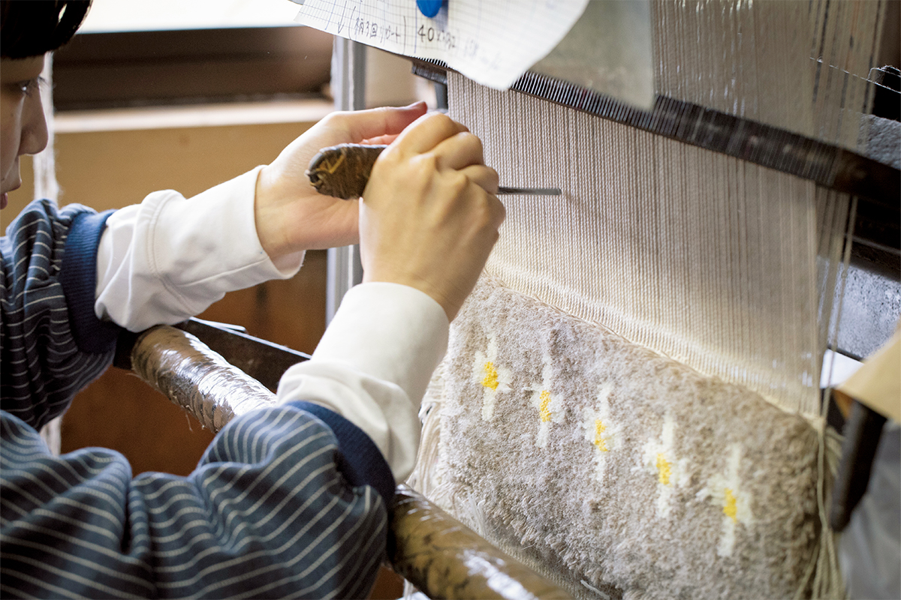
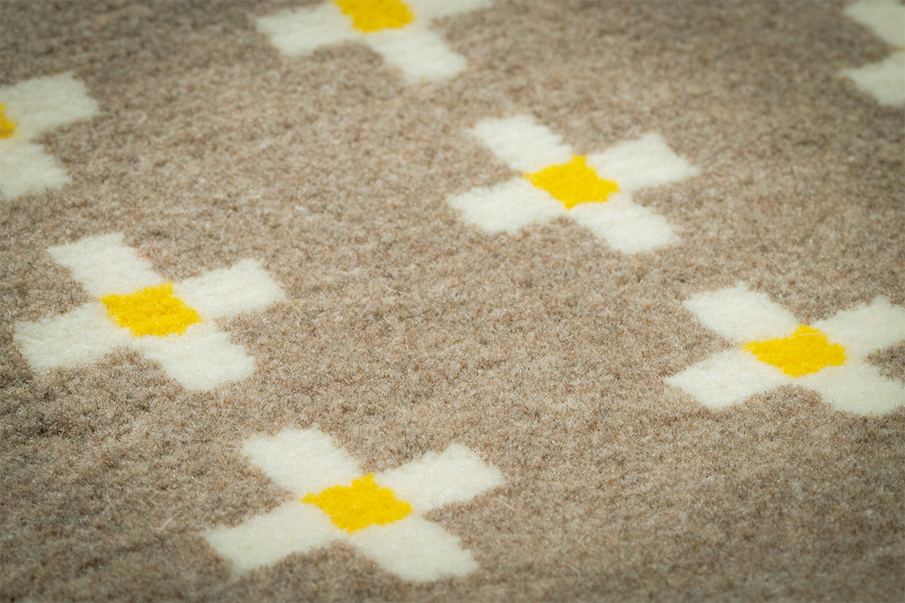
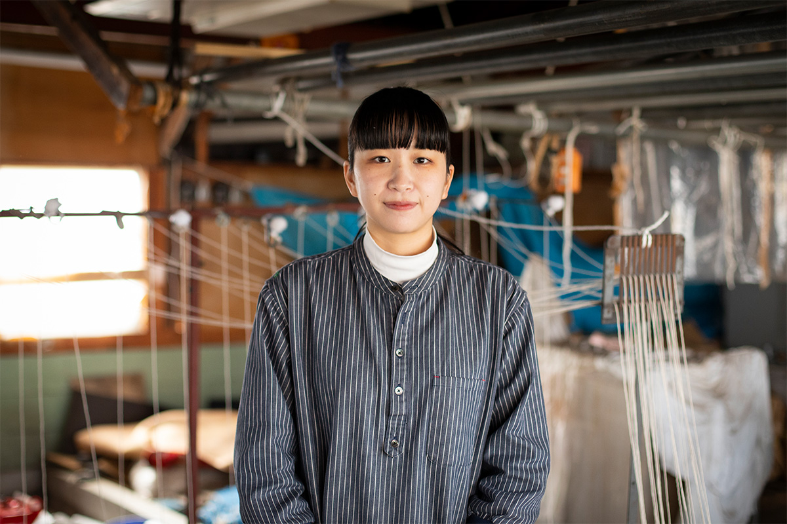
«Сегодня всё уходит в цифру, но я хочу передать следующему поколению прелесть ковра, сотканного руками»
мастерица Yonezawa Dantsu Takizawa Kobo
Коврики можно посмотреть и купить в шоуруме по предварительной записи; саму мастерскую гостям не показывают.
Yonezawa Dantsu Takizawa Kobo
- Адрес
- префектура Ямагата, Ёнэдзава, Дзёсай, 3-6-4
- Телефон
- +81 238-21-6232
- Часы работы
- шоурум 10:00–17:00, по предварительной записи
- Выходные
- воскресенье, праздники
Фото: Ямато Нонака.